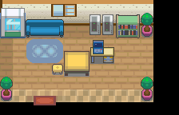

019 希鲁夫的遗产
一句话目标：替精灵爷爷前往黑暗穴，向约好的联络人取回物品（U 盘），再带回去交给他。
接取地点
- 精灵爷爷家（地图 45:6），屋内的精灵爷爷（local_id 3，坐标为 (4,5)）——接取与交付都在这里。
- 黑暗洞穴（地图 1:126），内部 (17,10) 附近的联络人（local_id 11）——交接物品处。
- 当前目录描述：替精灵爷爷去黑暗穴交接一件物品。
准备条件
- 接取分支（脚本
0x08EE2836）前面还有一层前置旗标 2939 的判断，该旗标的置位来源未在本包内定位。 - 建议先完成 018（精灵爷爷的实验），同一 NPC、同一间屋子，剧情上顺承。
- 黑暗洞穴内的野生宝可梦等级较高，建议带足恢复道具。
操作步骤
- 在精灵爷爷家与精灵爷爷对话，他说“你终于来了！我有件非常紧急……且不能告诉任何人的事要拜托你。你知道连接 31 号道路和烟墨市的黑暗穴吗？我已经和一个联络人约好了，在黑暗穴的内部交接一件物品……请你替我去一趟黑暗穴！”。
- 接受后出现“接受任务:<希鲁夫的遗产>”。
- 前往黑暗洞穴，到内部 (17,10) 附近找联络人（local_id 11）对话。他说“谁？别鬼鬼祟祟地站在那里”。
- 玩家说出暗号“多边形没有棱角”，他确认是精灵爷爷派来的人，交出物品；出现“[玩家/变量]收下了神密的 U 盘！”。
- 他补充“告诉那老头子，希鲁夫公司最近查得很严……让他好自为之吧”。
- 回到精灵爷爷家，他说“哦哦！你拿到了吗！快！快给我！”，把 U 盘插入电脑修复核心，进入交接长剧情（数据校验通过、核心代码修复、逻辑回路稳定化）。
- 交 U 盘后的修复剧情链接到后续《连接未来的牵绊》（编号 020）；学生登场、与学生对战、多边兽自我进化等后续段落归 020，本页不重复展开，请接续 020 完成结算。
交付检查
- 已经从黑暗洞穴联络人处取得 U 盘后回到精灵爷爷家对话即进入交付长剧情。
- 尚未接取任务（未持有 2940）时，黑暗洞穴 (17,10) 的同一 NPC 只会赠送黑色眼镜，不会进入交接剧情。
奖励
以下为与后续《连接未来的牵绊》（020）共用的一次结算，继续完成 020 后领取，不会分别发放两次：
- 12000$
- 10 BracerPoints
- 多边兽零式（275，Lv30，携带升级数据 ×1）
容易卡住的位置
- 黑暗穴内的交接要先接取任务，且在正确 NPC 处说出暗号；未接任务时同一位置触发的是黑色眼镜赠送（另一事件）。
- 交付后是连续的长剧情，随后衔接 020 的战斗段落，中途不要离场；不要在本页把该战斗当作 019 的独立步骤重复处理。
- 完成旗标在收尾剧情中设置，届时会显示“完成任务:<连接未来的牵绊>”字样，与本任务的目录标题不同，属 019/020 共用脚本的文案。
来源与待补
- 包：
data/quest_packets/019.json；入口脚本0x08EE04B7（精灵爷爷家）、0x08EE1638（黑暗洞穴），接取/交付脚本0x08EE2836、0x08EE27BA、0x08EE28BE、0x08EE295A、0x087B3299。 - 相关宝可梦：多边兽零式；共享结算中的对战训练家：376（属 020 衔接段落，不在本页重复）。
- 证据（旗标异常，保留原样不猜分界）：目录中 019 记为 accept 2940 / complete 3048，020 记为 accept=complete=3048；两页引用同一个结算脚本
0x087B3299，因此奖励是与 020 共用的一次结算，真正完成分界未定位。 - 未定位：接取分支前置旗标 2939 的置位来源；黑暗洞穴内另有黑色眼镜事件（旗标 2594）与本任务共用同一 NPC。
地点地图
共享RGB底图；点击可缩放定位。数字对应本页相关地点，不代表地图上全部事件。
31号道路

1 希鲁夫的遗产（4,5）
黑暗洞穴

1 希鲁夫的遗产（17,10）